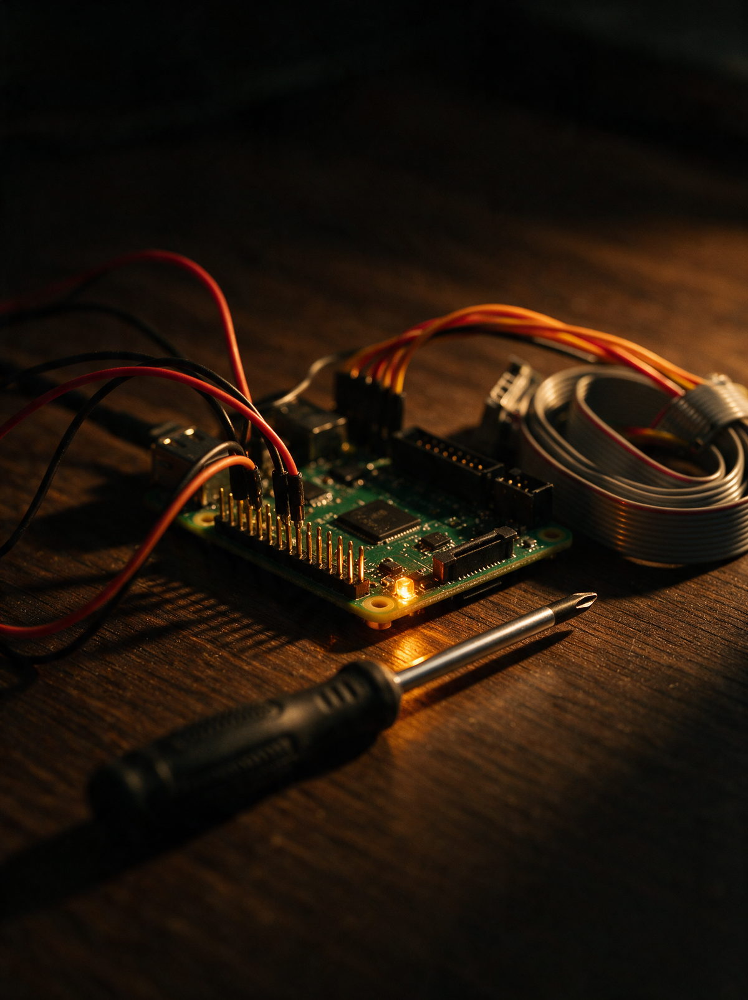

Tjänst 05
Automation & AI som tar det tråkiga.
Flöden i n8n och Zapier och egna AI-verktyg för det repetitiva. Offertsvar, produktdata, rapporter — sånt som annars äter en förmiddag i veckan.

Om tjänsten
Det finns nästan alltid en uppgift som görs varje vecka, tar en timme och aldrig blir roligare. Kopiera från ett mejl till ett kalkylark. Skriva samma svar för femtionde gången. Ladda upp bilder och byta filnamn. Det är där automation tjänar in sig snabbast.
Jag börjar med att titta på vad som faktiskt görs, inte vad som borde göras. Sedan bygger jag flödet i n8n eller Zapier, testar det mot verkliga fall och lämnar över med en beskrivning av vad som händer när något går fel. För det gör det ibland, och då ska du veta var du tittar.
AI används där det gör nytta och inte där det låter bra. Ett verktyg som föreslår ett svar du godkänner är användbart. Ett som skickar iväg svaret själv är en risk. Jag sätter gränsen där du vill ha den, inte där tekniken råkar gå.
Tjänst 05
Det som görs varje vecka och aldrig blir roligare — det är där maskinen ska in.
Vad du får
Det här ingår.
-
Genomgång av vardagen
Vilka uppgifter som återkommer och vad de kostar i tid.
-
Flöden i n8n eller Zapier
Byggda, testade mot riktiga fall och dokumenterade.
-
AI där det passar
Utkast och sammanfattningar — med dig kvar i beslutet.
-
Kopplingar
Mellan mejl, kalkylark, shop, CRM och det du redan använder.
-
Larm när något fastnar
Ett flöde som tyst slutar fungera är värre än inget.
-
Överlämning
Skriftlig beskrivning av vad som händer och var man tittar.

Ur portföljen
Automation & AI-flöden
Automationsflöden i n8n och Zapier, samt egna AI-agenter som tar hand om återkommande arbete.
Vanliga frågor
Är det inte dyrt att bygga automation?
Räkna på timmarna. En uppgift som tar en timme i veckan kostar dig runt femtio timmar om året. Ett flöde som tar en dag att bygga har betalat sig innan sommaren.
Vad händer om flödet slutar fungera?
Du får ett larm. Jag bygger in en avisering när något fastnar, för det farliga är inte att ett flöde går sönder utan att ingen märker det på tre veckor.
Måste jag byta system?
Nej. Poängen är att koppla ihop det du redan använder. Byter vi något är det för att det du har inte går att prata med, och då säger jag varför.
Kan AI:n svara på kundmejl själv?
Tekniskt ja. Jag rekommenderar det sällan. Ett utkast som du godkänner ger nästan samma tidsvinst utan risken att en modell lovar något du inte kan hålla.
Andra tjänster
Beskriv läget så säger jag vad jag skulle göra först.
Det kostar ingenting och binder dig inte till något. Oftast räcker ett par meningar om vad du säljer och vad som skaver.
Ta kontakt